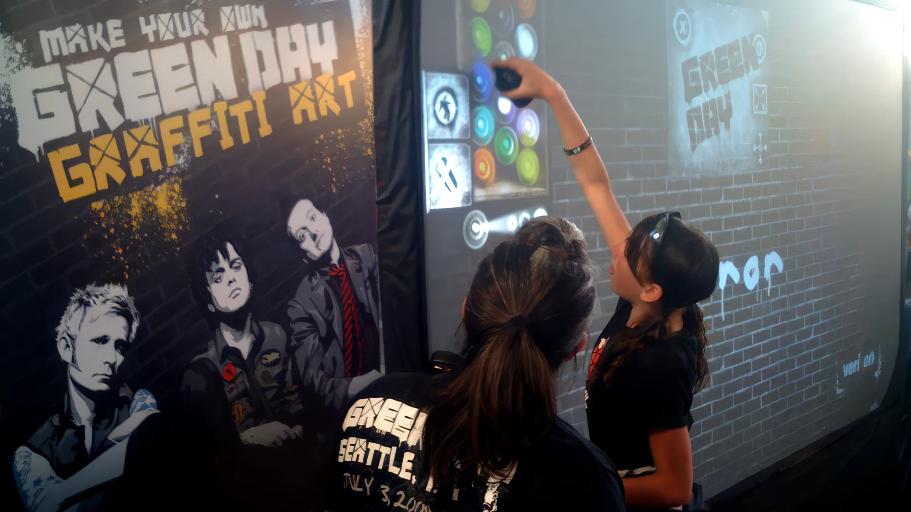
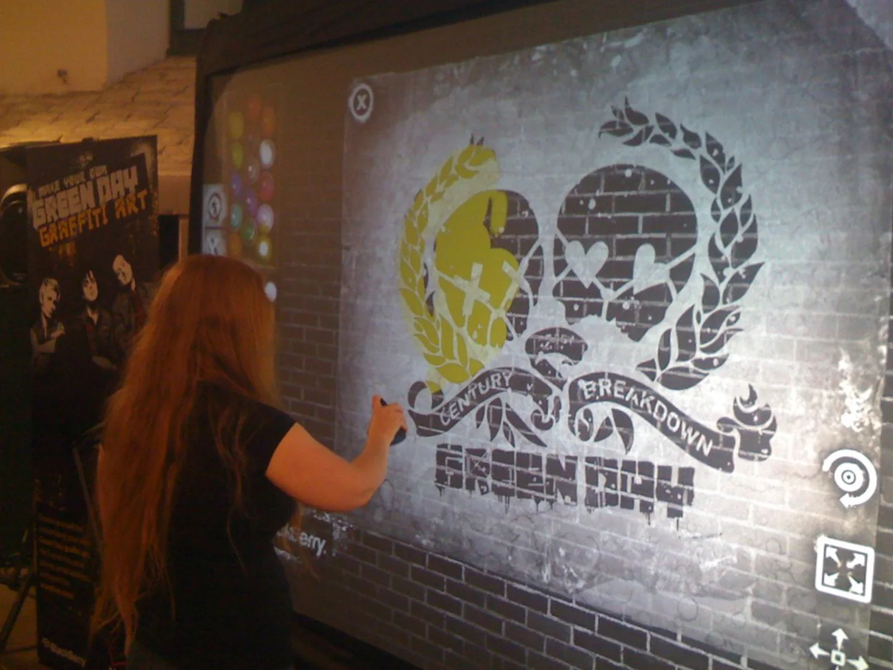
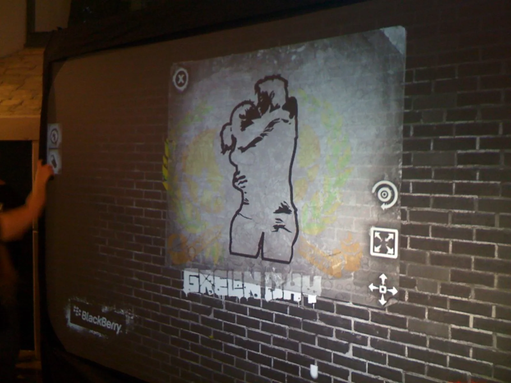
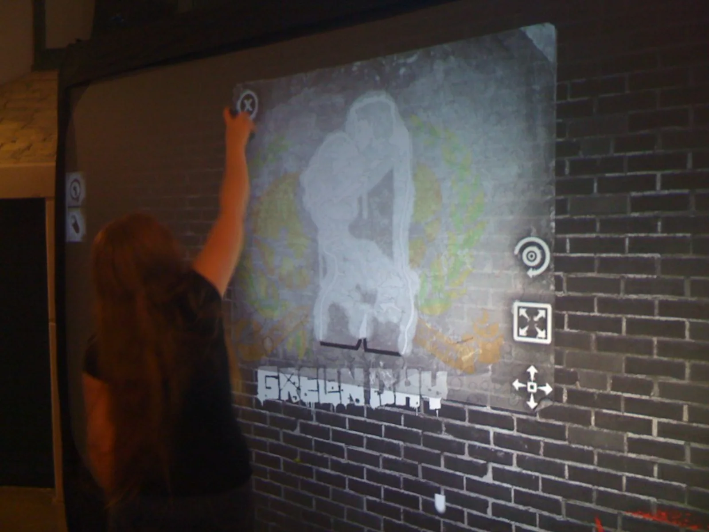
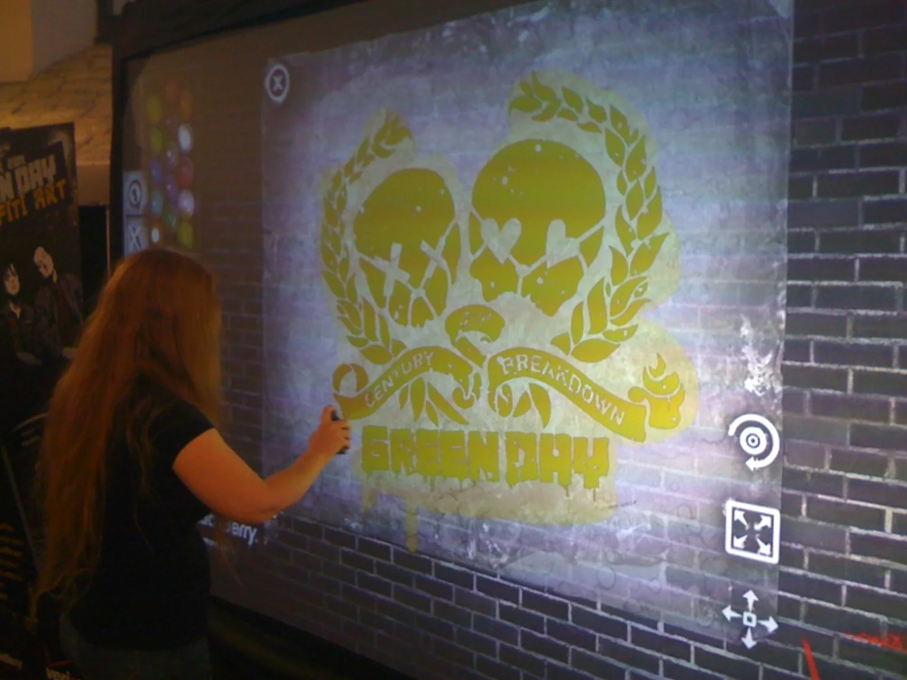
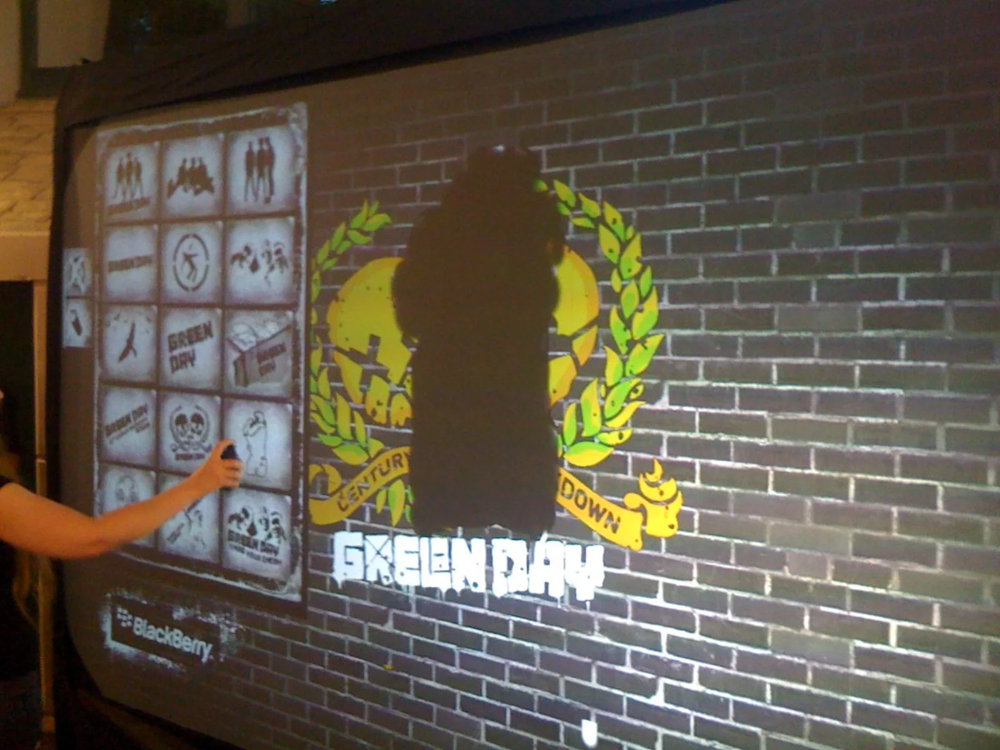
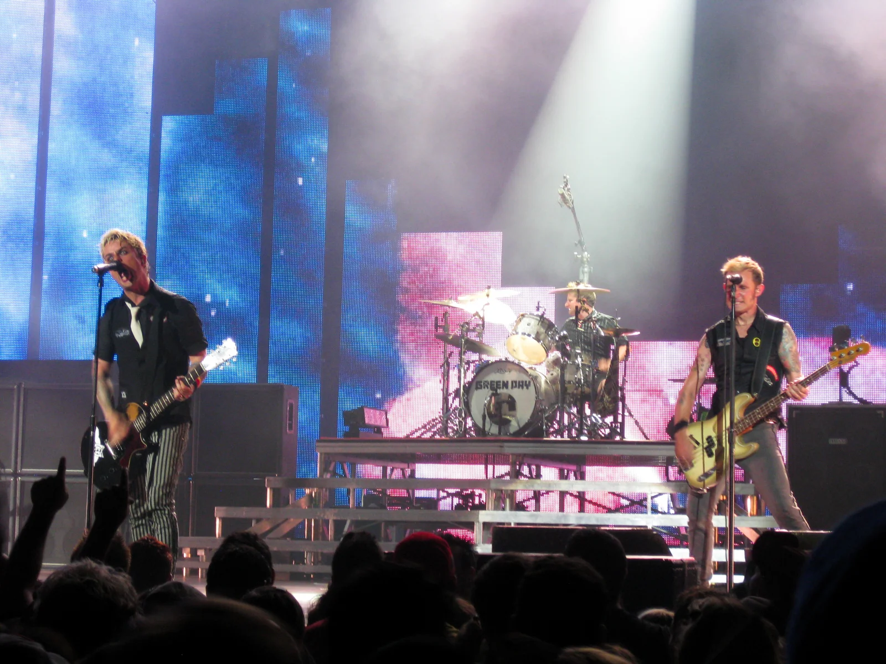

Make your own
Green Day cover.
- Artist & Album
- Green Day
21st Century Breakdown (2009) - Tour
- 21st Century Breakdown
World Tour · across the US - Partners
- Verizon (V CAST)
+ BlackBerry - Our Role
- Stencil-based digital
graffiti wall
(one of our earliest collabs)
A memory from the vault. When Green Day toured 21st Century Breakdown, Graffiti+ travelled across the US with Verizon on an installation that put the band's own stencils in fans' hands — so anyone could spray their own version of the album's graffiti cover and take it home on their phone.
Why this album, of all albums
Green Day's 21st Century Breakdown — released May 15, 2009 — wasn't just their eighth record; it was a punk rock opera that went on to win the Grammy for Best Rock Album. And its visual identity was pure street art: the now-iconic cover is stencil graffiti of a couple kissing on a brick wall, in that unmistakable red-and-black spray-paint aesthetic. The album looked like graffiti. So the most natural activation in the world was to let fans become the cover artist.
What we built
Under the banner "Make Your Own Green Day Graffiti Art," we set up a digital graffiti wall on the road with Verizon and BlackBerry. The wall came loaded with a custom Green Day stencil library — the band silhouettes, the skulls, the heart-grenade "21st Century Breakdown" emblem, the drip-letter logo, and the couple-kissing cover art itself — plus a full spray palette. Fans grabbed the can, layered the stencils, and painted their own cover, tag, or mash-up straight onto the brick-textured screen.
Then it left with them. Every finished piece was sent to the fan's phone and email and posted to Verizon's V CAST (vcastlive.com) — a personal, shareable keepsake from the show, years before "shareable content" was a line item. Zero mess, zero fumes, one custom Green Day cover per fan, city after city across the tour.
This one goes way back. It was one of Graffiti+'s earliest brand collaborations — a full US touring installation, a major band, and a major carrier, built around the same idea we still run today: hand people real creative tools and get out of the way.
Eighteen years. Six continents. One idea, done right.
For eighteen years, Graffiti+ has been putting real creative tools in people's hands — in public, at scale, and always with cultural integrity.
Born from the roots of graffiti culture and built for anyone willing to pick up a custom spray can, the platform turns tours, festivals and brand spaces into shared canvases where fans and first-timers create in real time. From their home in Vancouver to projects across six continents — and collaborations from Green Day and Verizon to Nike, Samsung and Chanel — Graffiti+ brings authentic, participatory experiences to audiences everywhere.
The album already looked like graffiti — so we let every fan spray their own cover and walk away with it.






Live concert photo by Daniel D'Auria, licensed CC BY-SA 2.0 (resized). All other photos © Graffiti+.